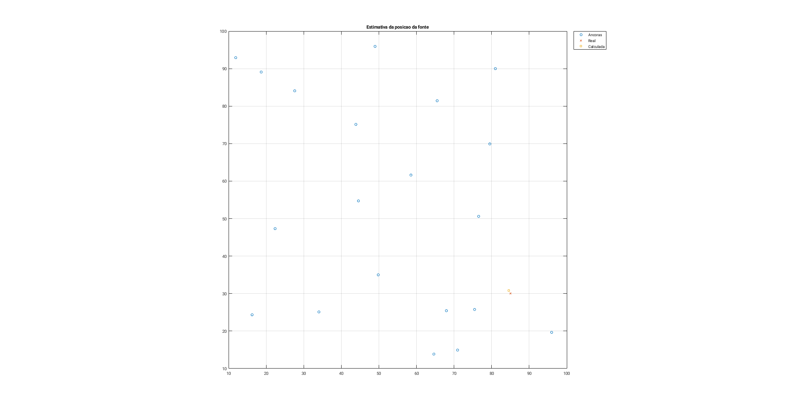

Exercicio 2b
%Reset do ambiente de trabalho close all; %Potencia da fonte Pw0 = 100; %Desvio padrao sig = 10^-1; %Numero de medidas M = 1000; No = round(v_norm.*M); a = zeros(sum(No), 2); k1 = 1; k2 = 0; %Cria observacoes para cada ancora for i=1:size(No) k2 = k2+No(i); a(k1:k2,:) = repmat([nodePos(i,2) nodePos(i, 3)], No(i), 1); k1 = k1 + No(i); end %Obtem a posicao da fonte x = sourcePos'; D = squareform(pdist([x zeros(size(x)) a']')); %Calcula distancia entre fonte e a ancora d = D(1, 3:end); %Calcula normas das acoras an = D(2, 3:end); %Calcula potencia nas ancoras sem ruido Pw = Pw0 ./ (d.^2); %Aplica ruido Pw = Pw.*exp(sig*rand(size(Pw))); QPw = 1e-2; %Quantitiza as potencias Pw = QPw*round(Pw/QPw); %Aplica metodo dos minimos quadrados A = [-2*repmat(Pw, [2 1]).*a'; -ones(size(Pw)); Pw]'; b = (-Pw.*(an.^2))'; z = A\b; xe = z(1:2); fprintf('Distancia entre posicao real e calculada da fonte: %f\n', norm(x-xe)); figure; plot(a*[1; 1i],'o', 'DisplayName', 'Ancoras'); hold all; grid on; plot(x'*[1; 1i],'x', 'DisplayName', 'Real'); plot(xe'*[1; 1i],'s', 'DisplayName', 'Calculada'); axis('square') title('Estimativa da posicao da fonte'); legend('Location', 'northeastoutside'); % RLS formulation (one-shot) RlsPar = struct('lam',1); [e,w,RlsPar] = qrrls(A,b,RlsPar); fprintf('Erro da Recursive Least Squares (one-shot): %f\n', norm(z-w)); % RLS formulation (incremental) RlsPar = struct('lam',1); for i = 1:size(A,1) [e,w,RlsPar] = qrrls(A(i,:),b(i),RlsPar); end fprintf('Erro da Recursive Least Squares (incremental): %f\n', norm(z-w));
Distancia entre posicao real e calculada da fonte: 0.952521 Erro da Recursive Least Squares (one-shot): 0.000355 Erro da Recursive Least Squares (incremental): 0.000355
Comentarios: